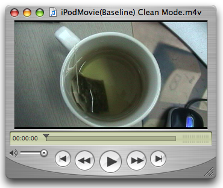
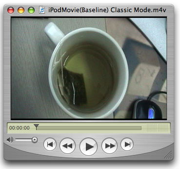

|
IntroductionFor developers not familiar with movie exporters, a Movie Export Component ( To find an export component, use the Component Manager Export components use the Once a specified export component ( The convenience Always remember to close any opened component by calling iPod Export ComponentThe iPod export component first shipped with QuickTime 7.0.3 and supported H.264 video up to 320x240. Since the release of QuickTime 7.1.3 the iPod export component also supports exporting H.264 video up to 640x480. To find the iPod export component, use the component description shown in Table 1. Table 1 : Component Description for the iPod export component.
Summary of FeaturesThe Fifth Generation iPods (firmware 1.2 or later) supports the playback of .m4v files containing H.264 video encoded using one of two profiles; 320x240 Baseline profile (up to Level 1.3) with AAC-LC audio and 640x480 Low-Complexity version of the H.264 Baseline Profile with AAC-LC audio. The iPod exporter is capable of producing .m4v files conforming to these profiles as shown in Tables 2 and 3. Table 2 : Low-Complexity version of the H.264 Baseline Profile .m4v file type.
Table 3 : Baseline (up to Level 1.3) .m4v file type.
Note: The H.264 standard includes a set of capabilities called profiles. For more information about the different levels of Baseline profile see H.264 Profiles. The Low-Complexity version of the H.264 Baseline Profile has been defined by Apple for the iPod. What defines the output result of an export operation using the iPod exporter are properties of the source movie passed to the exporter. Most important of these is the movie size as returned by the Depending on the source movie image size, the iPod export component will either produce a Low-Complexity version of the H.264 Baseline Profile .m4v file (see Table 2), or the Baseline profile .m4v file (see Table 3). Developers adding export support for the iPod may expect to have specific output profile options presented in a configurable export dialog. It is important to note however that the iPod export component does NOT provide any user or developer configurable options. IMPORTANT: The iPod exporter component flag Note: The rectangle enclosing the movie display boundary region is called the movie box. QuickTime provides the A movie's composition and size may differ depending on the selected aperture mode. For example, if Clean Aperture mode is selected, a 4:3 DV NTSC track appears as 640x480 and a 16:9 DV NTSC track appears as 853x480. Because the represented size of a movie may differ depending on aperture mode, the output produced by the iPod exporter may also differ. Movie SizeThe iPod export component determines which profile will be used to produce the output .m4v file by inspecting the source movie's image size. The destination movie's image size and profile is determined as shown in Table 4. Table 4 :
Frame RateThe output frame rate is determined by the source movie's frame rate, limited to 30 fps using adaptive frame sampling. Data RateWith the destination movie size being variable, the target data rate is calculated based on the effective destination movie image size (this is the movie image size after any scaling has been applied if required). Output data rates are as follows:
The comparison of movie image sizes is done in terms of the number of macroblocks in the movie image. Note: The codec will also attempt to maintain a peak data rate under 249600 bytes over a 2.6 second period. Code ExampleListing 1 demonstrates one use of the iPod export component and will produce a Baseline profile .m4v file that will fit within 320x240. This is done by changing the source movie box appropriately regardless of the input movie size before passing it to the export component. Applications may want to perform an operation such as this to specifically produce a Baseline profile .m4v file from larger source media while still maintaining correct aspect ratio. The results of using the code in Listing 1 to export a 16:9 DV NTSC 720x480 clip are shown in Figure 1 (using clean aperture mode) and Figure 2 (using classic aperture mode). Figure 1: Circles are round. 
Figure 2: Circles not so round. 
IMPORTANT: As shown in Table 4, the iPod export component will only scale movie images larger than 640x480 to fit while maintaining aspect ratio to produce Baseline Low-Complexity profile .m4v files. If you want to produce Baseline profile .m4v files up to 320x240 or Baseline Low-Complexity profile files larger than 320x240 (but smaller than or equal to 640x480), you will need to correct for aspect ratio yourself. Listing 2 contains utility functions called by Listing 1. Listing 1: Using the iPod export component. // Export using the iPod export component
// In this function we specifically set the movie box to fit 320x240 regardless
// of the input movie size - this is a good demonstration as the results are
// readily apparent with 16:9 DV media
OSStatus ExportiPodMovieToDesktop(Movie inMovie, Boolean inUseCleanApertureMode)
{
// component description for the iPod exporter
ComponentDescription cd = { MovieExportType, // type 'spit'
'M4V ', // iPod export component
kAppleManufacturer, // 'appl'
0, // any flags
kAnyComponentFlagsMask };
Component aComponent = 0;
MovieExportComponent theExportComponent = 0;
Handle dataRef = NULL;
OSType dataRefType = 0;
OSType savedApertureMode = 0;
Rect savedMovieBox = { 0 };
OSStatus status = paramErr;
if (NULL == inMovie) return status;
// create a data reference for the output file
status = QTNewDataReferenceFromFullPathCFString(
CFSTR("/Volumes/MacOSX/Users/ed/Desktop/iPodMovie.m4v"),
kQTNativeDefaultPathStyle,
0,
&dataRef,
&dataRefType);
if (status) goto bail;
// set the aperture mode to clean -- this may change the size of the movie box
// therefore we do this before anything else
if (true == inUseCleanApertureMode) {
status = SetMovieCleanApertureMode(inMovie, &savedApertureMode);
if (status) goto bail;
}
// save the original movie size because we're going to mess with it
GetMovieBox(inMovie, &savedMovieBox);
if (status = GetMoviesError()) goto bail;
// find the exporter -- note OpenADefaultComponent may also be an option
aComponent = FindNextComponent(aComponent, &cd);
if (0 == aComponent) { status = badComponentType; goto bail; };
// open it
status = OpenAComponent(aComponent, &theExportComponent);
if (status) goto bail;
// call our routine to set the movie box so the exporter will produce
// the results we want - in this case up to 320x240 Baseline
SetExportMovieBox(inMovie, 320, 240);
// export to .m4v
status = MovieExportToDataRef(theExportComponent, // export component instance
dataRef, // destination data reference
dataRefType, // destination data reference type
inMovie, // movie to export
0, // export specific track?
0, // start time
GetMovieDuration(inMovie)); // duration
// restore the saved movie box
SetMovieBox(inMovie, &savedMovieBox);
bail:
// restore original aperture mode
if (savedApertureMode) {
QTSetMovieProperty(inMovie,
kQTPropertyClass_Visual,
kQTVisualPropertyID_ApertureMode,
sizeof(savedApertureMode),
&savedApertureMode);
}
// dispose the data reference handle when you're done with it
if (dataRef) DisposeHandle(dataRef);
// always remember to close the component when you're done
if (theExportComponent) CloseComponent(theExportComponent);
return status;
}
Listing 2: Functions used by listing 1. // Set the movie aperture mode to Clean. In this mode,
// if possible, the video will be displayed at the correct
// pixel aspect ratio, trimmed to the clean aperture
// For example, 4:3 DV media will display at 640x480 instead of 720x480
OSErr SetMovieCleanApertureMode(Movie inMovie, OSTypePtr outSavedApertureMode)
{
OSType mode = kQTApertureMode_CleanAperture;
Boolean hasApertureModeDimensions = false;
OSErr err;
// does the movie have aperture mode dimensions?
err = QTGetMovieProperty(inMovie,
kQTPropertyClass_Visual,
kQTVisualPropertyID_HasApertureModeDimensions,
sizeof(hasApertureModeDimensions),
&hasApertureModeDimensions,
NULL);
if (noErr == err) {
if (false == hasApertureModeDimensions) {
// update the movie to support aperture modes
err = GenerateMovieApertureModeDimensions(inMovie);
}
if (noErr == err) {
// return the original mode
err = QTGetMovieProperty(inMovie,
kQTPropertyClass_Visual,
kQTVisualPropertyID_ApertureMode,
sizeof(OSType),
outSavedApertureMode,
NULL);
if (noErr == err) {
// set the aperture mode property on a movie to indicate we want
// aspect ratio and clean aperture dimensions
err = QTSetMovieProperty(inMovie,
kQTPropertyClass_Visual,
kQTVisualPropertyID_ApertureMode,
sizeof(mode),
&mode);
}
}
}
return err;
}
static void SetExportMovieBox(Movie inMovie, float inWantedWidth, float inWantedHeight)
{
Rect movieRect;
float movieRatio, wantedRatio;
float movieWidth, movieHeight;
float newWidth, newHeight;
// get the current movie box
GetMovieBox(inMovie, &movieRect);
// normalize movie box
MacOffsetRect(&movieRect, -movieRect.left, -movieRect.top);
// get the sizes
movieWidth = movieRect.right;
movieHeight = movieRect.bottom;
// some simple sanity checking - requesting > 640x480 doesn't make sense
// in cases where the movie is larger than 640 wide or 480 high
// the iPod exporter will scale the movie to fit in 640x480 while
// preserving aspect ratio - so don't do extra work
if ((movieWidth >= 640 && inWantedWidth >= 640) ||
(movieHeight >= 480 && inWantedHeight >= 480)) return;
/** calculate a new rect so that the movie fits into the wanted rect while retaining its aspect ratio */
movieRatio = movieWidth / movieHeight;
wantedRatio = inWantedWidth / inWantedHeight;
if (movieRatio > wantedRatio) {
newHeight = (inWantedWidth * movieHeight) / movieWidth;
newWidth = inWantedWidth;
} else {
newWidth = (inWantedHeight * movieWidth) / movieHeight;
newHeight = inWantedHeight;
}
// set the new movie box
MacSetRect(&movieRect, 0, 0, newWidth, newHeight);
SetMovieBox(inMovie, &movieRect);
}
IMPORTANT: At the time of this writing (QuickTime Version 7.2), the iPod Export Component has the Therefore, it is important to take this into consideration when searching for and using this component. If you are currently using Apple TV Export ComponentThe Apple TV export component is available with QuickTime 7.1.5 or later and supports exporting progressive H.264 video up to 1280x720 (720p) Main Profile (up to Level 3.1) with B-Frames and AAC-LC encoded stereo audio. To find the Apple TV export component, use the component description shown in Table 5. Table 5 : Component Description for the Apple TV export component.
Summary of FeaturesApple TV has the ability to playback Main Profile (up to Level 3.1) H.264 progressive video with B-Frames up to 1280x720 (720p) at 24 fps and AAC-LC encoded stereo audio with a maximum sampling rate of 44.1kHz. The Apple TV exporter is capable of producing .m4v files with the specifications listed in Table 6. Table 6 : Progressive Main Profile with B-Frames .m4v file type.
*Maximum spikes may be as high as 12 Mbps. **Maximum frame rate for 1280x720 content is 24 fps. What defines the output result of an export operation using the Apple TV exporter are properties of the source movie passed to the component. Most important of these is the frame rate and movie size as returned by the The Apple TV export component will produce an .m4v file at the appropriate size and profile level depending on the source movie image size and frame rate. Developers adding export support for the Apple TV may expect to have specific output options presented in a configurable export dialog. It is important to note however that Apple TV export component does NOT provide any user or developer configurable options. IMPORTANT: The Apple TV exporter component flag Movie SizeThe destination movie image size is determined by the source movie image size as well as the source movie frame rate as shown in Table 7. The maximum dimensions produced are 1280x720 at 24 fps and 960x540 at 30 fps. Table 7 :
Frame RateDestination frame rate is determined by source movie frame rate as well as source movie image size. The exporter will always favour maintaining frame rate, therefore if the source movie frame rate is less than or equal to 30 it is not modified (this may however cause the destination movie image size to change, for example a 1280x720 29.97 fps source movie will produce a 960x540 29.97 fps destination movie). Data RateThe data rate is restricted to a maximum of 5 Mbps (5000 kbps) and will vary depending on the source. It is based on the effective destination movie image size (this is the movie image size after any scaling has been applied if required) linearly interpolated between the defined movie sizes as shown in Table 8. Additionally, within an encoded movie the data rate may spike up to a maximum of 12 Mbps. Table 8 :
Code ExampleListing 3 demonstrates standard use of the Apple TV export component making sure the source movie has been set to clean aperture mode before export. Listing 3: Using the Apple TV export component. // Simple export to ATV making sure original source movie is using clean aperture dimensions
OSStatus ExportATVMovieToDesktop(Movie inMovie, Boolean inUseCleanApertureMode)
{
MovieExportComponent theExportComponent = 0;
Handle dataRef = NULL;;
OSType dataRefType = 0;
OSType savedApertureMode = kQTApertureMode_Classic;
OSStatus status = paramErr;
if (NULL == inMovie) return status;
// create a data reference for the output file
status = QTNewDataReferenceFromFullPathCFString(
CFSTR("/Volumes/MacOSX/Users/ed/Desktop/ATVMovie.m4v"),
kQTNativeDefaultPathStyle,
0,
&dataRef,
&dataRefType);
if (status) goto bail;
// find and open the ATV export component
status = OpenADefaultComponent(MovieExportType, 'M4VH', &theExportComponent);
if (status) goto bail;
// set the aperture mode to clean -- this may change the size of the movie box
// therefore we do this before anything else
if (true == inUseCleanApertureMode) {
status = SetMovieCleanApertureMode(inMovie, &savedApertureMode);
if (status) goto bail;
}
// export to .m4v
status = MovieExportToDataRef(theExportComponent, // export component instance
dataRef, // destination data reference
dataRefType, // destination data reference type
inMovie, // movie to export
0, // export specific track?
0, // start time
GetMovieDuration(inMovie)); // duration
// restore original aperture mode
if (true == inUseCleanApertureMode) {
QTSetMovieProperty(inMovie,
kQTPropertyClass_Visual,
kQTVisualPropertyID_ApertureMode,
sizeof(savedApertureMode),
&savedApertureMode);
}
bail:
// always remember to close the component when you're done
if (theExportComponent) CloseComponent(theExportComponent);
// dispose the data reference handle when you're done with it
if (dataRef) DisposeHandle(dataRef);
return status;
}
IMPORTANT: At the time of this writing (QuickTime Version 7.2), the Apple TV Export Component has the Therefore, it is important to take this into consideration when searching for and using this component. If you are currently using iPhone Export ComponentThe iPhone export component is available with QuickTime 7.2 or later and supports exporting Baseline profile H.264 video up to 480x360 and AAC-LC encoded stereo audio. To find the iPhone export component, use the component description shown in Table 9. Table 9 : Component Description for the iPhone export component.
Summary of FeaturesiPhone has the ability to playback H.264 Baseline Profile (up to Level 3.0) video, up to 640x480 at 30 fps and AAC-LC encoded stereo audio with a maximum sampling rate of 48kHz. iPhone will also play movies or audio files that can play on an iPod. Note that B frames are not supported in the Baseline profile. The iPhone exporter is capable of producing .m4v files for local playback or WiFi playback where the total data rate is approximately 1 Mbps. The generated file specifications are shown in Table 10. Table 10 : Baseline (up to Level 3.0) .m4v file type.
What defines the output result of an export operation using the iPhone exporter are properties of the source movie passed to the component. Most important of these is the movie size as returned by the Developers adding export support for the iPhone may expect to have specific output options presented in a configurable export dialog. It is important to note however that iPhone export component does NOT provide any user or developer configurable options. IMPORTANT: The iPhone exporter component flag IMPORTANT: At the time of this writing (QuickTime Version 7.2), the iPhone Export Component has the Therefore, it is important to take this into consideration when searching for and using this component. If you are currently using Movie SizeThe iPhone export component determines which profile will be used to produce the output .m4v file by inspecting the source movie's image size. The destination movie's image size and profile is determined as shown in Table 11. Table 11 :
Frame RateThe output frame rate is determined by the source movie's frame rate, limited to 30 fps using adaptive frame sampling. Data RateWith the destination movie size being variable, the target video data rate is calculated based on the effective destination movie image size (this is the movie image size after any scaling has been applied if required). Output data rates are as follows:
The comparison of movie image sizes is done in terms of the number of macroblocks in the movie image. Note: The codec will also attempt to maintain a peak data rate under 249600 bytes over a 2.6 second period. Code ExampleListing 4 demonstrates how easy it is to use QTKit to create content for the iPhone. Listing 4: Using QTKit to export to iPhone. - (void)exportMovieToiPhone:(NSString *)inFile
{
NSError *error = nil;
// create the attributes dictionary for movieWithAttributes
NSDictionary *attrs = [NSDictionary dictionaryWithObjectsAndKeys:
(id)inFile, QTMovieFileNameAttribute,
[NSNumber numberWithBool:NO], QTMovieOpenAsyncOKAttribute,
QTMovieApertureModeClean, QTMovieApertureModeAttribute,
[NSNumber numberWithBool:YES], QTMovieIsActiveAttribute,
nil];
// create a QTMovie from the file
QTMovie *aMovie = [QTMovie movieWithAttributes:attrs error:&error];
if (aMovie && nil == error) {
// do export
//'M4VP' is the FourCC for the iPhone export component
NSDictionary *dictionary = [NSDictionary dictionaryWithObjectsAndKeys:
[NSNumber numberWithBool:YES], QTMovieExport,
[NSNumber numberWithLong:'M4VP'], QTMovieExportType,
nil];
// export the movie using the specified exporter
BOOL status = [aMovie writeToFile:@"/Users/Shared/myiPhoneMovie.m4v" withAttributes:dictionary];
if (NO == status) {
// something didn't go right during the export process
NSLog(@"%@ encountered a problem when exporting.\n", [inFile lastPathComponent]);
}
} else {
// couldn't open the movie
NSAlert *alert = [NSAlert alertWithError:error];
[alert runModal];
}
}
iPhone (Cellular) Export ComponentThe iPhone (Cellular) export component is available with QuickTime 7.2 or later and supports exporting Baseline level 1.0 profile H.264 video up to 176x144 and AAC-LC encoded monophonic audio. To find the iPhone (Cellular) export component, use the component description shown in Table 12. Table 12 : Component Description for the iPhone (Cellular) export component.
Summary of FeaturesiPhone has the ability to playback H.264 Baseline Profile (up to Level 3.0) video, up to 640x480 at 30 fps and AAC-LC encoded stereo audio with a maximum sampling rate of 48kHz. iPhone will also play movies or audio files that can play on an iPod. Note that B frames are not supported in the Baseline profile. The iPhone (Cellular) export component produces .3gp files playable through the EDGE/3G network (via progressive download) where the total data rate is 80kbps. The generated file specifications are listed in Table 13. Table 13 : Baseline level 1.0 .3gp file type.
What defines the output result of an export operation using the iPhone (Cellular) exporter are properties of the source movie passed to the component. Most important of these is the movie size as returned by the Developers adding export support for the iPhone and using the iPhone (Cellular) exporter may expect to have specific output options presented in a configurable export dialog. It is important to note however that iPhone (Cellular) export component does NOT provide any user or developer configurable options. IMPORTANT: The iPhone (Cellular) exporter component flag IMPORTANT: At the time of this writing (QuickTime Version 7.2), the iPhone (Cellular) Export Component has the Therefore, it is important to take this into consideration when searching for and using this component. If you are currently using Movie SizeThe iPhone (Cellular) export component determines output image size by inspecting the source movie's image size and always attempts to fit within 176x144 preserving aspect ratio. The destination movie's image size is determined as shown in Table 14. Table 14 :
Frame RateThe output frame rate is always 15 fps regardless of the source frame rate. Data RateThe target video data rate is always 56 Kbps and as the movie size is almost always 176x144 no data rate interpolation is performed. ReferencesDocument Revision History
Posted: 2009-04-30 | |||||||||||||||||||||||||||||||||||||||||||||||||||||||||||||||||||||||||||||||||||||||||||||||||||||||||||||||||||||||||||||||||||||||||||||||||||||||||||||||||||||||||||||||||||||||||||||||||||||||||||||||||||||||
|